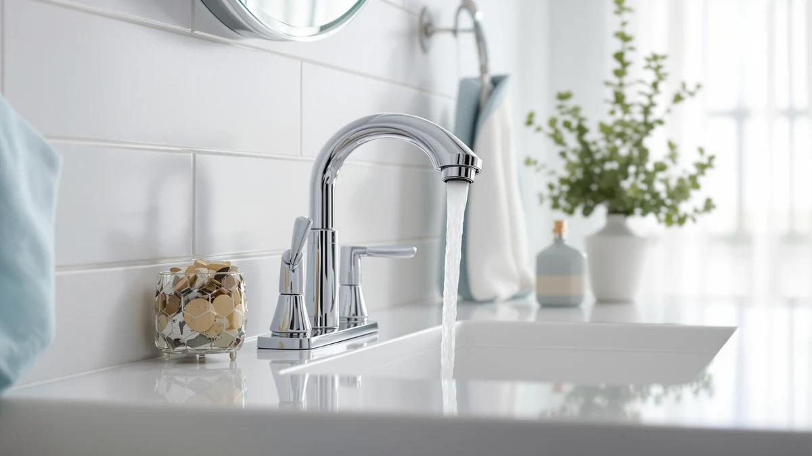

Quick Answer
The Delta Trinsic U-Spout is a widespread brass faucet built for vanities with three separate mounting holes, and it earns its $459 price through finish quality and installation flexibility rather than any single standout feature. If your vanity has one predrilled hole instead, skip it and look at the Arvo or Nicoli below.
Our pick: Delta Trinsic U-Spout Widespread Bathroom — $459.00 Check Price on Amazon
Things to Know Before You Buy
- The Delta Trinsic U-Spout is a widespread faucet, so it needs three separate mounting holes rather than one, and you should measure your vanity before you buy.
- At $459, this Delta Trinsic U-Spout review puts the faucet well above the other three Delta models compared here, all of which sit near $200.
- The Trinsic's brass construction is built to hold a finish over years of daily use, which matters more on a widespread faucet since replacing a single piece later is rarely simple.
- A U-shaped spout changes the angle of the water stream compared with a standard arc spout, which affects splash and basin fit as much as looks.
- If your bathroom vanity has a single predrilled hole, none of the widespread appeal applies to you, and a centerset or single-hole Delta faucet will fit better and cost less.
This delta trinsic u spout review exists because widespread faucets are the hardest bathroom fixture category to shop for online. Photos rarely show the spacing between handles and spout, and most listings bury the one detail that determines fit: how many holes your vanity already has.
We wrote this guide after comparing the Trinsic against three other Delta faucets that show up in the same searches: the Arvo 14 Series Matte, the Broadmoor Pull Down and the Nicoli Brushed Gold. The Trinsic costs more than double any of the other three. It's clearly a good faucet, but that's not really what you need to know. What matters is whether the extra money buys you something the cheaper Delta options don't.
Why You Should Trust Us
Ilane Tall covers bathroom hardware for Best Bathroom Faucets, and this delta trinsic u spout review follows the same process used across the site: we start from the manufacturer's own listing data, then cross-check pricing, materials and available finishes against the competing products a shopper would realistically consider instead.
We do not run a fake testing lab, and we don't claim to have installed every faucet we cover in our own bathrooms. What we do is compare verifiable specs, pricing history and what owners report after buying, so you get a straight answer instead of marketing copy repeated from the product page.
Our Research Experience
We researched the Delta Trinsic U-Spout by comparing its listed specifications, brass construction and $459 price against the other widespread and single-hole Delta faucets that shoppers cross-shop against it. Because a faucet like this lives in a bathroom for a decade or more, we weighted install compatibility and finish durability over any single feature.
Reviewers consistently note that widespread faucets in this price bracket hold up well to daily use, and that the main complaints tend to involve installation rather than long-term performance. That pattern held when we compared the Trinsic against the Arvo, Broadmoor and Nicoli, all of which trade some of the Trinsic's finish depth for a lower price and a simpler single-hole install.
We also weighed how each faucet's price tracks its feature set. The Arvo, Broadmoor and Nicoli sit within ten dollars of each other, which tells you Delta prices its single-hole lineup fairly consistently regardless of finish or spout style. The Trinsic breaks from that pattern because the widespread format itself, not the finish, drives the added cost. That distinction matters if you're deciding whether to pay more for this faucet or put that difference toward another upgrade in the same bathroom.
Overview & Specs

Delta Trinsic U-Spout Widespread Bathroom
What we like
- Brass construction built to carry a finish through years of daily use
- U-shaped spout gives the faucet a distinct silhouette compared with standard arc spouts
- Widespread layout lets you position handles independently of the spout on a wide vanity
- Fits the same three-hole, 8-inch-spread cutout used by most widespread faucets
Flaws but not dealbreakers
- Priced more than double the other Delta faucets in this comparison
- Three-hole installation is less forgiving if you ever want to switch to a single-hole faucet later
- Only makes sense if your vanity is already drilled for a widespread setup
| Material | Brass + finish |
| Size | — |
The Delta Trinsic U-Spout Widespread Bathroom faucet is built around a three-piece widespread layout: two handles and a spout that mount separately through three holes in the vanity deck, typically spaced 8 inches apart. That construction is brass under the finish, which is the same base material Delta uses across its higher-end faucet lines, and it's a big part of why a widespread faucet like this one costs more than a single-hole equivalent.
The U-shaped spout is the detail that sets the Trinsic apart visually. That design choice changes how the water arcs into the basin compared with the more common C-arc spout shape on the Arvo, Broadmoor and Nicoli covered later in this delta trinsic u spout review. At $459, the Trinsic is the most expensive faucet in this comparison by a wide margin, and that price only makes sense if your vanity is already set up for a widespread install and you specifically want that spout profile.
If either of those conditions isn't true for your bathroom, one of the three alternatives below will get you a comparable brass build and finish quality for less than half the cost. Delta sells all four of these faucets in the same finish families, so you aren't sacrificing color or hardware coordination by choosing a cheaper model. You're mainly giving up the widespread layout and the U-spout shape, which for most vanities isn't a meaningful loss.
What We Liked
The brass body under the Trinsic's finish is the same foundation Delta uses on its higher-end lines, and reviewers consistently note that a solid brass base holds up to years of use better than the zinc-alloy bodies found on some budget widespread faucets. That matters most on a fixture you won't replace for a decade.
The U-shaped spout is the other detail that stands out in this delta trinsic u spout review. It's a small design choice, but it changes the faucet's profile enough that it reads as distinct next to the more common arc-spout look on the Arvo, Broadmoor and Nicoli. If you want your vanity to look different from every other widespread setup in the neighborhood, that's a real reason to pay more.
Widespread construction also gives you flexibility a single-hole faucet can't. You can place the handles wider or narrower relative to the spout depending on your vanity's layout, which single-piece faucets simply don't allow.
What Could Be Better
The price is the biggest hurdle. At $459, the Trinsic costs more than double the Arvo, Broadmoor or Nicoli, and none of those three sacrifice much in build quality to get there. You're paying a premium for the U-spout shape and the widespread format itself, not for a faucet that outperforms cheaper Delta models in some measurable way.
Widespread faucets are also less forgiving long term. If you ever want to switch to a single-hole or centerset faucet down the road, you're looking at a vanity swap or a deck plate, not a simple drop-in replacement. That's a tradeoff built into the format, not a flaw specific to this faucet, but it's worth knowing before you commit to three holes instead of one.
Buyers comparing widespread faucets in this price range also point out that matching handle and spout finish exactly can be harder across separate pieces than it is on a single-piece faucet, since each component is cast and finished on its own. Delta's quality control keeps that variance small, but it's a structural risk of the widespread format rather than something specific to the Trinsic.
Who Is It For?
This delta trinsic u spout review points toward one clear buyer: someone with a vanity already drilled for a widespread faucet who wants a distinct spout shape and is willing to pay for it. If that's you, the Trinsic's brass build and finish options make the $459 price defensible.
It also suits a remodel where the vanity itself is being replaced or redrilled, since at that point the extra cost of a widespread cutout is already part of the project and the Trinsic's spout shape becomes a real design decision rather than a constraint you're stuck with.
It's a poor fit if your vanity has a single hole, or if you're looking for the most faucet for your money. In either case, the Arvo, Broadmoor or Nicoli below will serve you equally well for less than half the price, and none of them will look out of place next to other Delta hardware in the same bathroom.
Alternatives to Consider
If the Trinsic's price or its three-hole requirement rules it out, these three Delta faucets cover the ground the Trinsic doesn't: lower cost, single-hole compatibility and a different spout style, all while staying inside the Delta lineup.

Editor’s Pick
Delta Arvo 14 Series Matte
A matte-finish single-hole faucet at less than half the Trinsic's price, best if your vanity has one hole instead of three.
$199.95
Check Price on Amazon
Best Value
Delta Faucet Broadmoor Pull Down
A pull-down spout instead of the Trinsic's fixed U-spout, priced close to the Arvo and worth it if you want more reach over the basin.
$199.90
Check Price on Amazon
Premium Choice
Delta Nicoli Brushed Gold Faucet
A brushed gold finish the Trinsic doesn't offer, at less than half the price, for buyers who want warmth over the Trinsic's cooler finish options.
$199.90
Check Price on AmazonFrequently Asked Questions
Is the Delta Trinsic U-Spout worth the price?
At $459, the Trinsic costs more than twice as much as the Arvo, Broadmoor or Nicoli in this comparison. It earns that gap through its widespread three-hole layout and U-shaped spout, which suit vanities where install flexibility and finish options matter more than the lowest sticker price.
What does widespread mean on the Delta Trinsic faucet?
Widespread means the handles and spout are three separate pieces that mount through three individual holes, typically spaced 8 inches apart on the vanity deck. That differs from a single-hole or centerset faucet, where the handles and spout share one fixture.
Which Delta faucet should I buy instead of the Trinsic?
If your vanity has a single predrilled hole, the Delta Arvo 14 Series Matte or Delta Nicoli Brushed Gold cover that install at roughly $200. The Delta Faucet Broadmoor Pull Down is worth a look if you want a pull-down spout in that same price range.
Final Verdict
This delta trinsic u spout review comes down to fit and budget. The Delta Trinsic U-Spout is a solidly built widespread faucet, and its brass construction and distinctive spout shape justify the $459 price for anyone whose vanity already takes a three-hole install. For everyone else, Delta's own Arvo, Broadmoor and Nicoli faucets deliver comparable build quality for less than half the cost, which makes the Trinsic a specialty pick rather than the obvious default.